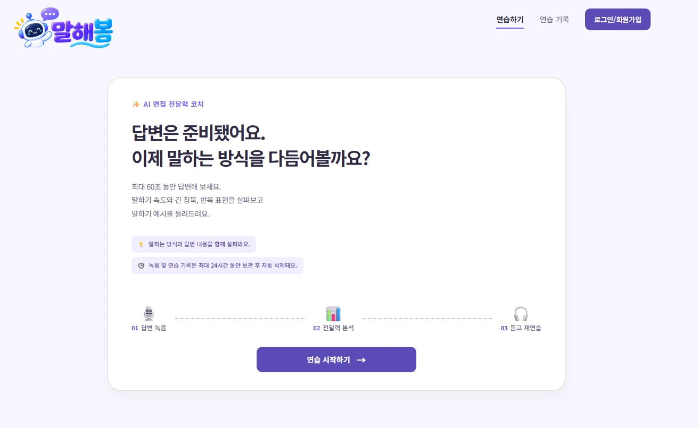
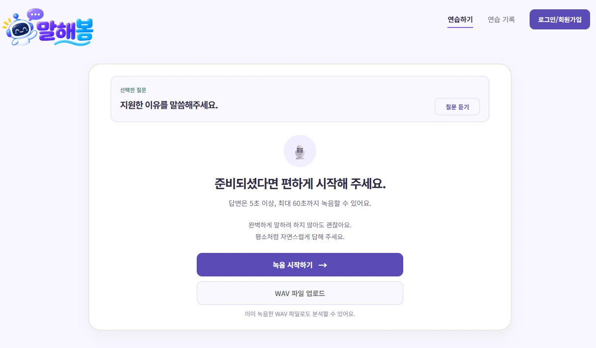
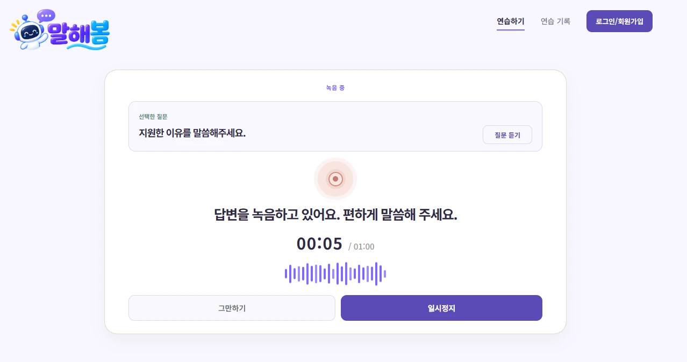
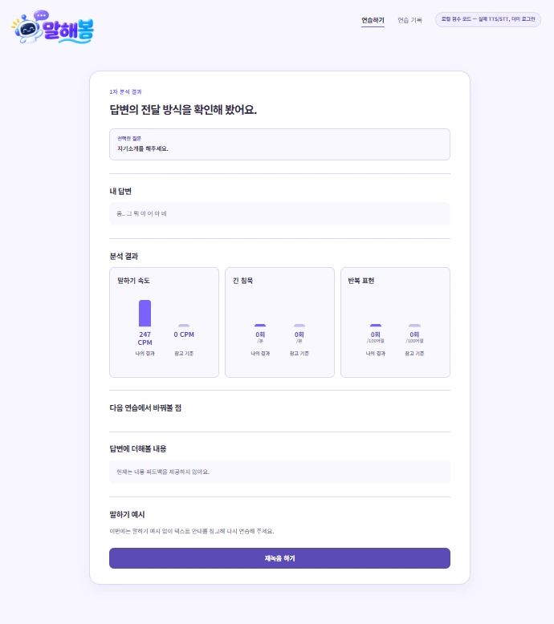

경험을 답변으로 정리하기
경험은 많은데 면접 답변으로 어떻게 정리해야 할지 모르겠어요.
내 경험과 채용 공고를 바탕으로 답변을 분석하고,
다시 답하며 달라진 점을 확인해 보세요.
머릿속에 있는 경험을 설득력 있게 말하는 일. 말해봄은 그 과정의 고민에서 출발했어요.
경험은 많은데 면접 답변으로 어떻게 정리해야 할지 모르겠어요.
내 답변에 질문과 연결되는 근거가 충분한지 궁금해요.
말하기 속도나 반복 표현을 스스로 확인하기 어려워요.
다시 답했을 때 무엇이 달라졌는지 알고 싶어요.
경험을 연결하고, 직접 답하며, 근거와 함께 피드백 받고, 다시 연습하세요.
나의 경험과 채용 공고의 요구사항을 연결해요.
선택적 README 분석 · 공고 연계질문을 선택하고 음성으로 답변한 뒤 전사문을 확인해요.
음성 응답 · WAV 제출 · 전사문 수정답변 내용과 말하기 방식을 구체적으로 살펴봐요.
실제 답변 인용 · 보완 포인트답변을 보완하고 무엇이 달라졌는지 확인해요.
재연습 · 변경점 비교 · 후속 질문질문부터 코칭, 다시 답변하기까지. 하나의 흐름에서 이어지는 면접 연습 경험을 만나보세요.
진행 단계를 쉽게 돌아보고
대화형 피드백을 이어가고
답변의 근거를 한눈에 확인해요
ⓘ 위 화면은 개선 예정 UI를 바탕으로 재구성한 기획 목업이며, 현재 운영 중인 화면과 다를 수 있습니다.
실제 저장소에 포함된 이미지 리소스를 소개합니다. 아래 화면은 프론트엔드 데모 이미지이며 현재 배포 화면과 다를 수 있습니다.




말하기 방식뿐 아니라 답변의 내용과 근거까지. 두 가지 관점에서 답변을 돌아보세요.
어떻게 말했는지 확인해요.
무엇을 말했고 어떤 근거가 있는지 확인해요.
나아진 점을 막연하게 설명하는 대신, 재답변에 추가된 근거와 설명을 비교합니다.
“프로젝트에서 문제가 생겨 성능을 개선했어요. 원인을 분석했고, 캐시 적용 후 문제가 해결되었습니다.”
“API 응답이 지연되어 로그로 재현 조건을 확인했어요. 원인 후보를 검증하고 캐시를 적용한 뒤 응답 시간을 재측정했어요.”
* 위 답변은 서비스 작동 방식의 이해를 돕기 위한 기획 예시입니다. 실제 사용자 결과나 측정된 개선 효과가 아닙니다.
연습을 시작하기 전에 알아두면 좋은 내용을 모았어요.
아니요. README 제출을 건너뛰고 진행할 수 있어요.
마이크 녹음 대신 WAV 파일을 제출할 수 있어요.
AI 분석 전에 전사문을 직접 확인하고 수정·확정할 수 있어요.
보관 기간은 운영 정책 확인 후 최종 안내할 예정이에요. 실제 서비스의 최신 안내를 확인해 주세요.